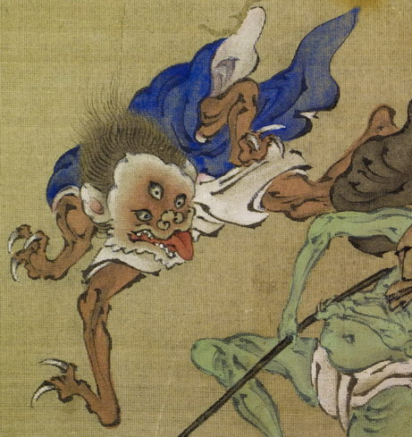

獣のような顔をした三つ目の化物。肌は茶色く、髪の毛は逆立っている。耳が大きく、横に裂けた口を開けて、舌を出している。手の指は3本で、鋭く長い爪が生えている。足指にも同じような爪が映えている。青い上着と白い袴状のものを身につけ、上半身をかがめて、飛び歩いている。
著作者：木舜／出典：親書誌：U426_nichibunken_0155：東都画家妖怪画帖；トウトガカヨウカイガチョウ／日付：2010／資源識別子：U426_nichibunken_0155_0001_0005
Copyright (c)2010- International Research Center for Japanese Studies, Kyoto, Japan. All rights reserved.